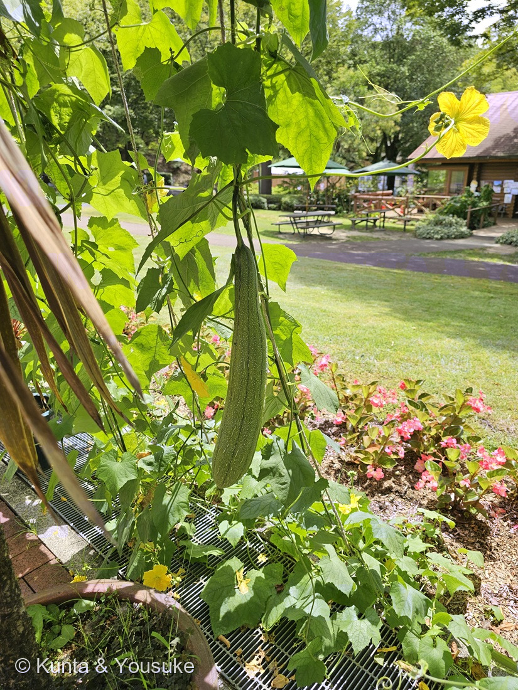
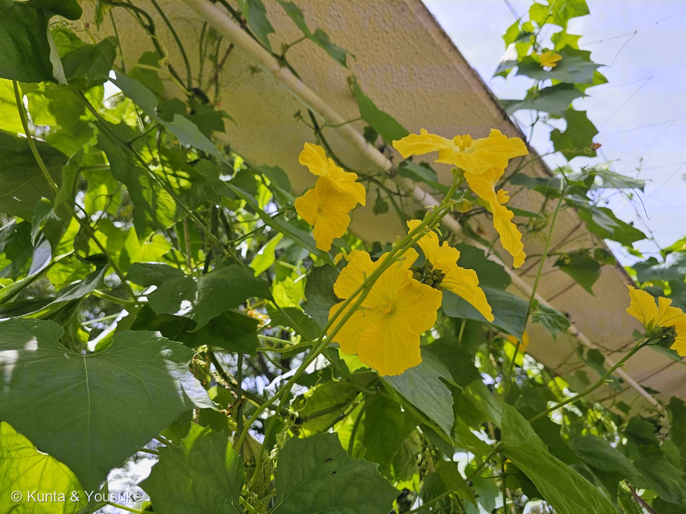
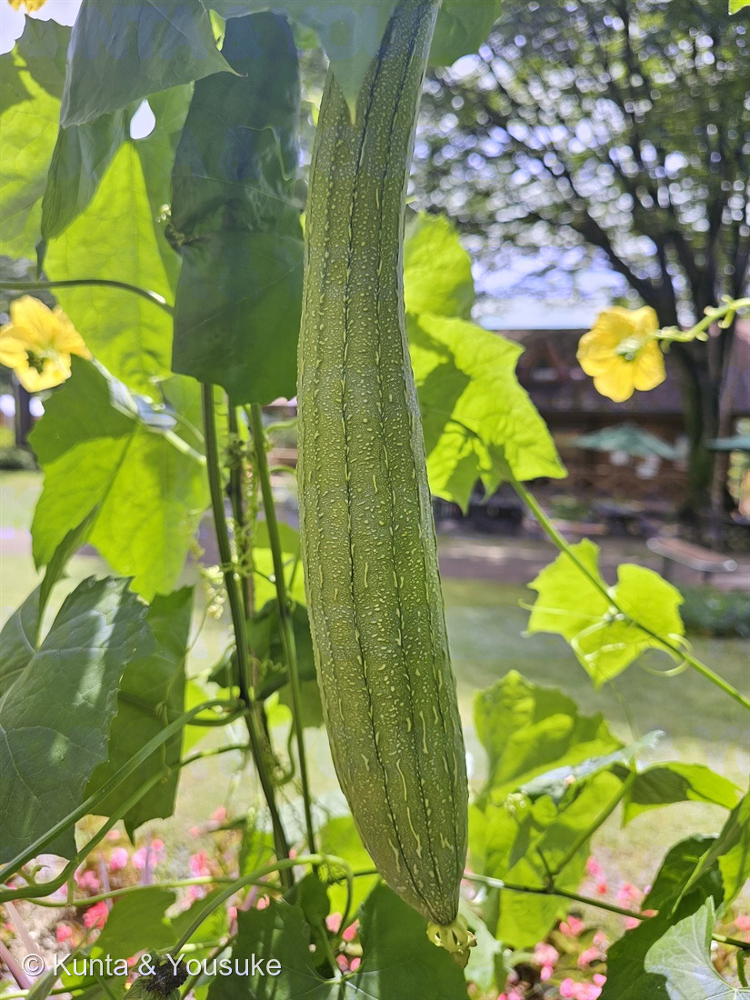
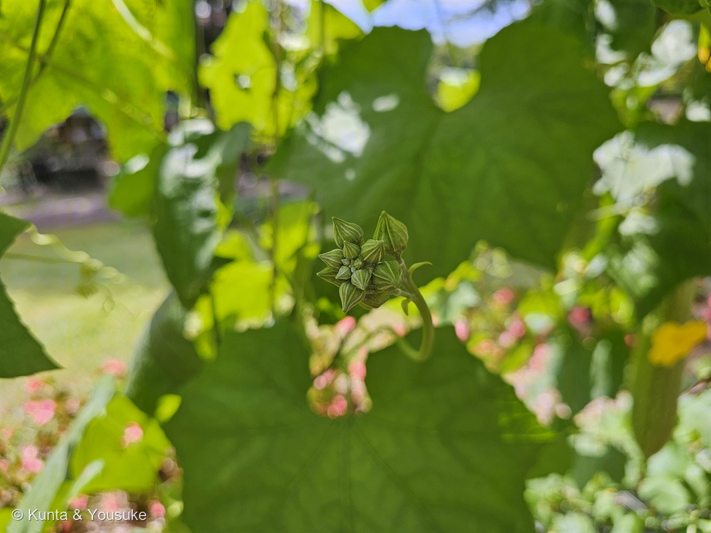
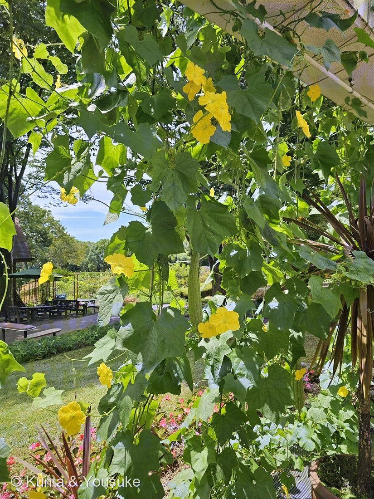

地図を読み込んでいるよ…
🔍 写真も地図も、押しているあいだ拡大して見られるよ（スマホは指を置いてすこし待ってね）。
🌍 の地図＝この子がもともと自生している場所を緑に。熱帯アジア原産。日本へは江戸時代に中国から渡来した（三河の植物観察）。
⭐熱帯アジア原産だよ（三河の植物観察）。⚠「熱帯アジア」は幅のある言い方なので、この地図はインド亜大陸から東南アジアまでを塗ってある——ほんとうの自生地はもっとせまいかもしれない。⚠⚠日本は塗っていない——「江戸時代に中国から渡来した」（同）＝この国のヘチマは、みんな人が持ちこんで育てている子だよ。⭐⭐でもこの子は、日本語の名前のほうがすっかり日本のものになっている——「糸瓜（いとうり）」→「とうり」→ いろは歌で「と」は「へ」と「ち」の間 →「へち間」＝ヘチマ。⭐外から来た草に、いろは歌のなぞなぞで名前をつけてしまう——⭐⭐渡来から400年で、すっかり住みついたということだね。
⚠ 地図は国（日本と中国だけ県・省）までしか塗れないから、ほんとうの分布より広く見えていることがあるよ。地図はだいたいの場所。正確なところは、上の文を見てね。
ヘチマ（糸瓜）
Luffa aegyptica Mill.（異名 Luffa cylindrica M.Roem.）
糸瓜（いとうり）／英名 sponge gourd・loofah
ウリ科 · Cucurbitaceae（ヘチマ属）── 056キカラスウリ・090キュウリ・138ゴーヤに続く4人目のウリ科。ヘチマ属は図鑑ではじめて
燻太さんの一言「ベゴニアの温室のそば。これはヘチマ？」──うん、ヘチマだよ。決め手は「つぼみの房」と「なめらかな実」
⭐⭐⭐ 名前の由来 ── 「へ」と「ち」の、あいだ
⭐ この子の名前、日本語でいちばん面白い名前のひとつだと思う。三河の植物観察は、こう説明している。
「元は糸瓜（いとうり）で、これは果実を乾燥させたとき糸状になるためである。この糸瓜が『とうり』と訛り、『と』はいろは順で『へ』と『ち』の間にあることから、『へち間』と呼ばれるようになった」
⭐⭐⭐ 順を追うとこう。
- 実を乾かすと、中が糸だらけになる → ⭐「糸瓜（いとうり）」
- 「いとうり」がなまって → ⭐「とうり」
- ⭐⭐⭐いろは歌をならべると「…へ・と・ち…」 → 「と」は「へ」と「ち」の間にある
- だから「へち間」＝ヘチマ
⭐⭐ つまり、この名前はことば遊びなんだ。——⭐昔の人が、いろは歌をそらんじていたからこそ通じる、なぞなぞみたいな名前。
- 学名 Luffa aegyptica Mill.（異名 L. cylindrica）。⭐cylindrica は「円筒形の」——あの実の形そのままだね。
- 英名は sponge gourd（スポンジのウリ）・loofah（ルーファ）。⭐世界じゅうで「たわしのウリ」と呼ばれている。
この植物のこと ── 10mのつると、房で咲く花
- ウリ科ヘチマ属のつる草。⭐056 キカラスウリ・090 キュウリ・138 ゴーヤに続く4人目のウリ科で、⭐ヘチマ属は図鑑ではじめて。
- つるは「長さ10m以下になる」（三河）。⭐写真⑤の棚いっぱいが、この子。
- 巻きひげは「普通、2〜4(〜6)分岐する」（同）。⭐写真④の右下に、くるんと巻いたひげが写っているよ。
- 葉は「三角形〜ほぼ円形」「しばしば(3〜)5〜7裂し」（同）。⭐深くは切れこまない。
- 花は「黄色、車形、直径5〜9(10)㎝」。花期は夏〜秋（同）。
- 原産は熱帯アジア。「江戸時代に中国から渡来した」（同）。
- 実は「円筒形、真っすぐ又はわずかに曲がり、長さ15〜45（60）㎝×幅3〜6（〜10）㎝、平滑、刺で覆われず」（同）。⭐そして「熟すと、強く繊維質になる」。
同定について ── 燻太さんの「これはヘチマ？」への答え

④ つぼみのかたまり。⭐これが「総状花序にまとまってつく雄花」のつぼみ——⭐この子を決めた、いちばんの手がかりだよ（番号は上のギャラリーからのつづき）。
⭐⭐⭐ うん、ヘチマだよ。⭐決め手が4つそろっている。
- ⭐⭐⭐①雄花が「房」でついている（写真②④）。三河「長さ12〜35㎝の総状花序に普通(5〜)15〜20個つく」——⭐写真④の、縦すじの入った紡錘形のつぼみが放射状に集まったかたまりが、それ。⭐ウリ科でも、こんなふうに花を房でまとめてつける子は多くない。
- ⭐⭐②花が黄色い車形で、大きい（三河「黄色、車形、直径5〜9(10)㎝」）。⭐写真②の花びら、うすくてしわがあって、平たく開いているね。
- ⭐③葉が「三角形〜ほぼ円形」で浅く裂ける（同）。⚠深く切れこまないのが、138 ゴーヤとの分かれ目。
- ⭐⭐⭐④実が細長い円筒形で、表面が平滑（写真③）。三河「平滑、刺で覆われず」。
❌ 落とした相手は4人。
- ⭐⭐トカドヘチマ（Luffa acutangula） ── ⚠同じヘチマ属だけど、実に「8〜10角（かど）」がある（三河）。⭐写真③の実は、細いすじは走っているけれど、シルエットは丸くてなめらか。角は立っていない。
- 138 ゴーヤ ── 実がいぼいぼ。葉が深く切れこむ。
- 090 キュウリ ── 実にいぼ、花はもっと小さい。
- ユウガオ ── 花が白い（この子は黄色）。
⚠ 園のラベルは見あたらなかったので、この子は写真から決めたよ。⭐205・206と続けて園に名前を教えてもらっていたので、ひさしぶりに自分で調べた一人になった。
⭐⭐ 実の先に、花の跡がついている
⭐ 写真③をよく見てほしいんだ。——ぶら下がった実のいちばん下の先っぽに、しぼんで黄土色になったものがくっついている。
⭐⭐⭐ これ、花の跡なんだ。
⭐ ウリ科の雌花は、花のうしろ（つるにつながる側）ではなく、花の下にすでに小さな実をつけている——⭐⭐つまり、実のほうが花より「つるに近い側」にある。⭐だから、実が育つと、しぼんだ花は実の先に残るんだ。
⭐⭐ これを「子房下位」というよ。——⭐090 キュウリや138 ゴーヤでも同じ。スーパーのキュウリのお尻に、ちいさな黒い跡がついていることがあるでしょう。あれと同じもの。
⚠ 写真③に写っているのが雌花の跡なのは確かだけれど、この実がいつ咲いた花のものかは分からないよ。
⭐⭐⭐ 緑のカーテン ── 138ゴーヤが呼んでいた子

⑤ 棚を見上げた「緑のカーテン」。⭐下にベンチとテーブルがある——⭐この子は、日かげを作る仕事もしているんだね（番号は上のギャラリーからのつづき）。
⭐⭐⭐ この子、じつは図鑑がずっと探していた子なんだ。
138 ゴーヤのおまけとして、探してみたいにこう書いてあった ──
「⭐138ゴーヤのおまけ＝同じウリ科の『緑のカーテン仲間』。ゴーヤと同じくつるで登り黄色い花を咲かせるけれど、葉の切れ込みは浅く、実は細長くて苦くない。⭐完熟して乾かすと、中が繊維だけになって『たわし・スポンジ』に。…ゴーヤとヘチマ、『緑のカーテンの二大巨頭』を、葉と実でくらべよう」
⭐⭐ そして燻太さんが撮ってくれたのが、まさに緑のカーテンだった（写真⑤）。⭐棚いっぱいにつるが登って、その下にベンチとテーブルがある。⭐日よけとして植えられている子だね。
⭐ これで、おまけに書いた見くらべができるようになった。
- 葉 ── ⭐ゴーヤは深く切れこむ／ヘチマは浅く裂けるだけ。
- 実 ── ⭐ゴーヤはいぼだらけで苦い／ヘチマは平滑で、苦くない。
- ⭐⭐そして最後がちがう ── ゴーヤは食べて終わり。ヘチマは、熟して枯れると中が繊維だけになって、たわしになる。
⭐⭐⭐ 同じ棚に登って、同じ黄色い花を咲かせて、同じ夏の日かげを作るのに、行き先がぜんぜんちがうんだ。
⏳ 宿題は、その「たわしになったところ」を見ること。⭐この日の実はまだ青くて、みずみずしかった。⭐⭐秋に、もう一度この棚に来られたらいいな。
参考：三河の植物観察・ヘチマ（Luffa aegyptica Mill.／synonym Luffa cylindrica M.Roem.／元は糸瓜（いとうり）で、これは果実を乾燥させたとき糸状になるためである。この糸瓜が「とうり」と訛り、「と」はいろは順で「へ」と「ち」の間にあることから、「へち間」と呼ばれるようになった／熱帯アジア原産／江戸時代に中国から渡来した／長さ10m以下になる／巻きひげは普通、2〜4(〜6)分岐する／葉は三角形〜ほぼ円形、しばしば(3〜)5〜7裂し／雄花は長さ12〜35㎝の総状花序に普通(5〜)15〜20個つく／雌花は単生／花は黄色、車形、直径5〜9(10)㎝／花期は夏〜秋／果実は円筒形、長さ15〜45（60）㎝×幅3〜6（〜10）㎝、平滑、刺で覆われず／熟すと、強く繊維質になる／種子は長さ10〜12㎜、普通、黒色／トカドヘチマは8〜10角がある）